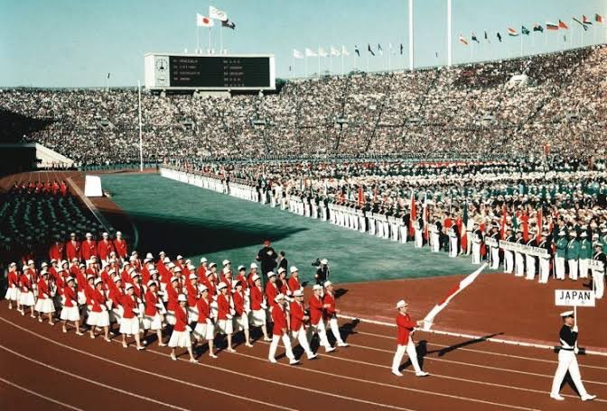
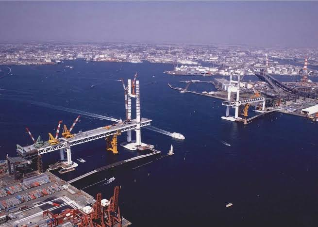
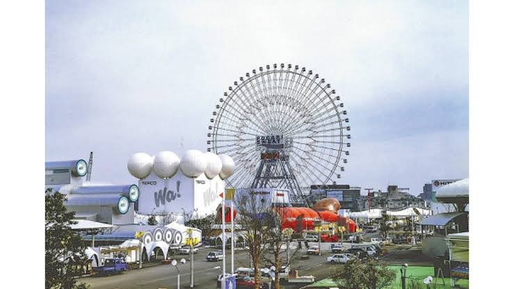
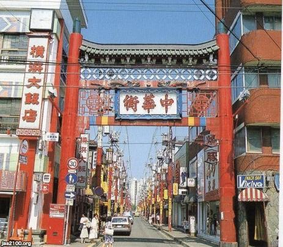
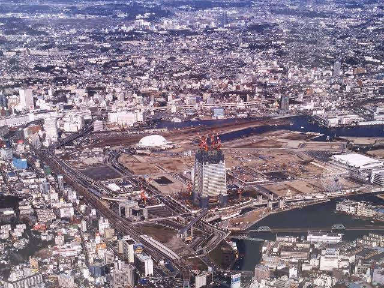

質問
- 1964年の東京オリンピックの時、横浜の街の様子はどうでしたか？何か思い出はありますか？
- 当時(1989)、ベイブリッジが「横浜の新しいシンボル」として話題になりましたが、あなたはどのように感じましたか？
- 1989年の横浜博覧会（横浜博）に行ったことはありますか？もし行ったなら、どんな展示やイベントが印象に残っていますか？
- みなとみらいや元町・中華街エリアは大きく変わりましたが、最近訪れた中で「ここは昔と違って魅力的になったな」と感じた場所はありますか？
- 1993年当時、ランドマークタワーの展望台や施設が新たにオープンしましたが、最初に訪れた時の印象や、特に印象深い経験があれば教えてください。
資料




